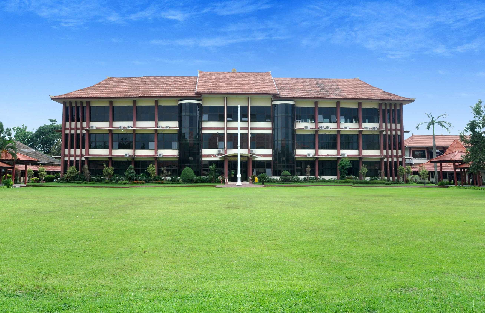

Pendidikan
Riwayat dan pendidikan yang saya tempuh saat ini.
Sekolah Menengah Atas (SMA)

Saat menduduki bangku SMA saya menempuh jurusan Sains (MIPA) di salah satu SMA kota Bondowoso yaitu SMA Negeri 2 Bondowoso dan saya tergabung dalam organisasi atau yang biasa disebut ekstrakulikuler Design Graphic.
Perguruan Tinggi
Saat ini saya berada di bangku perkuliahan lebih tepatnya saya berkuliah di Politeknik Negeri Jember dan menjadi mahasiswa angkatan 2020. Saat ini saya sedang menempuh semester 2 di jurusan Teknik Informatika.